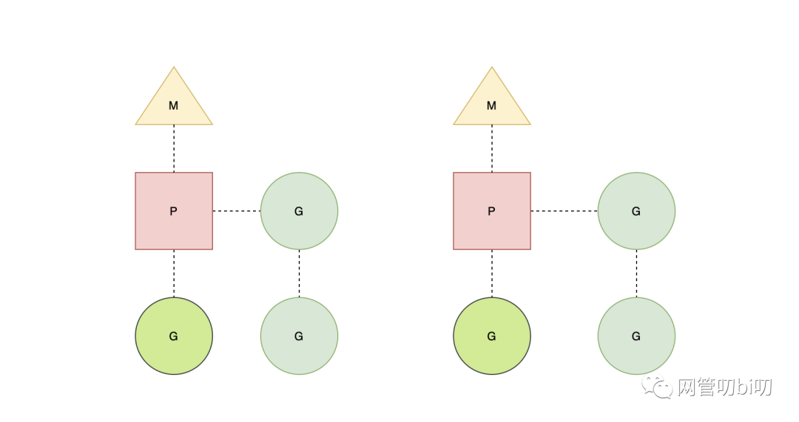
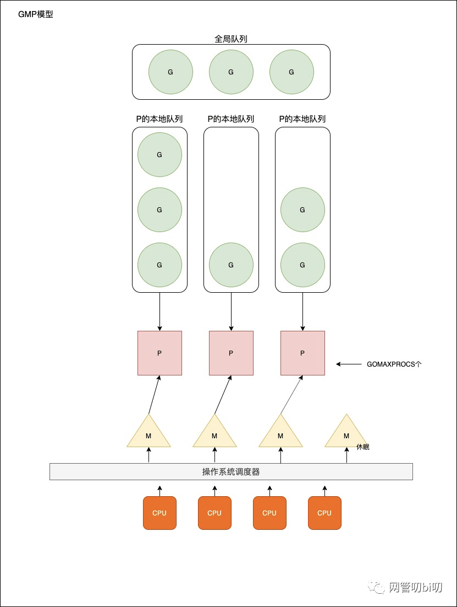

Go语言调度器
Go 语言调度器
所有应用程序都是运行在操作系统上，真正用来干活(计算)的是 CPU。所以谈到 Go 语言调度器，我们也绕不开操作系统、进程与线程这些概念。线程是操作系统调度时的最基本单元，而 Linux 在调度器并不区分进程和线程的调度，它们在不同操作系统上也有不同的实现，但是在大多数的实现中线程都属于进程。
多个线程可以属于同一个进程并共享内存空间。因为多线程不需要创建新的虚拟内存空间，所以它们也不需要内存管理单元处理上下文的切换，线程之间的通信也正是基于共享的内存进行的，与重量级的进程相比，线程显得比较轻量。
虽然线程比较轻量，但是在调度时也有比较大的额外开销。每个线程会都占用 1 兆以上的内存空间，在对线程进行切换时不止会消耗较多的内存，恢复寄存器中的内容还需要向操作系统申请或者销毁对应的资源。
大量的线程出现了新的问题
- 高内存占用
- 调度的 CPU 高消耗
然后工程师们就发现，其实一个线程分为"内核态"线程和"用户态"线程。
一个 用户态线程 必须要绑定一个 内核态线程 ，但是 CPU 并不知道有 用户态线程 的存在，它只知道它运行的是一个内核态线程(Linux 的 PCB 进程控制块)。这样，我们再去细化分类，内核线程依然叫线程(thread)，用户线程叫协程(co-routine)。既然一个协程可以绑定一个线程，那么也可以通过实现协程调度器把多个协程与一个或者多个线程进行绑定。
Go 语言的 goroutine 来自协程的概念，让一组可复用的函数运行在一组线程之上，即使有协程阻塞，该线程的其他协程也可以被 runtime 调度，转移到其他可运行的线程上。最关键的是，程序员看不到这些底层的细节，这就降低了编程的难度，提供了更容易的并发。
Go 中，协程被称为 goroutine，它非常轻量，一个 goroutine 只占几 KB，并且这几 KB 就足够 goroutine 运行完，这就能在有限的内存空间内支持大量 goroutine，支持了更多的并发。虽然一个 goroutine 的栈只占几 KB，但实际是可伸缩的，如果需要更多内存，runtime 会自动为 goroutine 分配。
既然我们知道了 goroutine 和系统线程的关系，那么最关键的一点就是实现协程调度器了。
Go 目前使用的调度器是 2012 年重新设计的，因为之前的调度器性能存在问题，所以使用 4 年就被废弃了。重新设计的调度器使用 G-M-P 模型并一直沿用至今。

- G — 表示 goroutine，它是一个待执行的任务；
- M — 表示操作系统的线程，它由操作系统的调度器调度和管理；
- P — 表示处理器，它可以被看做运行在线程上的本地调度器；
G
gorotuine 就是 Go 语言调度器中待执行的任务，它在运行时调度器中的地位与线程在操作系统中差不多，但是它占用了更小的内存空间，也降低了上下文切换的开销。
goroutine 只存在于 Go 语言的运行时，它是 Go 语言在用户态提供的线程，作为一种粒度更细的资源调度单元，如果使用得当能够在高并发的场景下更高效地利用机器的 CPU。
M
Go 语言并发模型中的 M 是操作系统线程。调度器最多可以创建 10000 个线程，但是其中大多数的线程都不会执行用户代码（可能陷入系统调用），最多只会有 GOMAXPROCS 个活跃线程能够正常运行。
在默认情况下，运行时会将 GOMAXPROCS 设置成当前机器的核数，我们也可以使用 runtime.GOMAXPROCS 来改变程序中最大的线程数。一个四核机器上会创建四个活跃的操作系统线程，每一个线程都对应一个运行时中的 runtime.m 结构体。
在大多数情况下，我们都会使用 Go 的默认设置，也就是活跃线程数等于 CPU 个数，在这种情况下不会触发操作系统的线程调度和上下文切换，所有的调度都会发生在用户态，由 Go 语言调度器触发，能够减少非常多的额外开销。
操作系统线程在 Go 语言中会使用私有结构体 runtime.m 来表示
type m struct {
g0 *g
curg *g
...
}
其中 g0 是持有调度栈的 goroutine，curg 是在当前线程上运行的用户 goroutine，用户 goroutine 执行完后，线程切换回 g0 上，g0 会从线程 M 绑定的 P 上的等待队列中获取 goroutine 交给线程。
P
调度器中的处理器 P 是线程和 goroutine 的中间层，它能提供线程需要的上下文环境，也会负责调度线程上的等待队列，通过处理器 P 的调度，每一个内核线程都能够执行多个 goroutine，它能在 goroutine 进行一些 I/O 操作时及时切换，提高线程的利用率。因为调度器在启动时就会创建 GOMAXPROCS 个处理器，所以 Go 语言程序的处理器数量一定会等于 GOMAXPROCS，这些处理器会绑定到不同的内核线程上并利用线程的计算资源运行 goroutine。
此外在调度器里还有一个全局等待队列，当所有 P 本地的等待队列被占满后，新创建的 goroutine 会进入全局等待队列。P的本地队列为空后，M也会从全局队列中拿一批待执行的 goroutine 放到 P 本地的等待队列中。
GMP 模型视图

- 全局队列：存放等待运行的 G。
- P 的本地队列：同全局队列类似，存放的也是等待运行的 G，存的数量有限，不超过 256 个。新建 G 时，G优先加入到 P 的本地队列，如果队列已满，则会把本地队列中一半的 G 移动到全局队列。
- P 列表：所有的 P 都在程序启动时创建，并保存在数组中，最多有 GOMAXPROCS(可配置)个。
- M：线程想运行任务就得获取 P，从 P 的本地队列获取 G，P 队列为空时，M也会尝试从全局队列拿一批 G 放到 P 的本地队列，或从其他 P 的本地队列偷一半放到自己 P 的本地队列。M运行 G，G 执行之后，M会从 P 获取下一个 G，不断重复下去。
- goroutine 调度器和 OS 调度器是通过 M 结合起来的，每个 M 都代表了 1 个内核线程，OS 调度器负责把内核线程分配到 CPU 上执行。
调度器的策略
调度器的一个策略是尽可能的复用现有的活跃线程，通过以下两个机制提高线程的复用：
- work stealing 机制，当本线程无可运行的 G 时，尝试从其他线程绑定的 P 偷取 G，而不是销毁线程。
- hand off 机制，当本线程因为 G 进行系统调用阻塞时，线程释放绑定的 P，把 P 转移给其他空闲的线程执行。
Go 的运行时并不具备操作系统内核级的硬件中断能力，基于工作窃取的调度器实现，本质上属于先来先服务的协作式调度，为了解决响应时间可能较高的问题，目前运行时实现了协作式调度和抢占式调度两种不同的调度策略，保证在大部分情况下，不同的 G 能够获得均匀的 CPU 时间片。
协作式调度依靠被调度方主动弃权，系统监控到一个 goroutine 运行超过 10ms 会通过 runtime.Gosched 调用主动让出执行机会。抢占式调度则依靠调度器强制将被调度方被动中断。
推荐其他博主的一篇文章 Golang 调度器 GMP 原理与调度全分析，里面用几十张图详细展示了全场景的调度策略解析，让我们更容易理解调度器的 GMP 模型和它的工作原理。
如果想从 Go 的源码层面了解调度器的实现，可以看看下面链接这个博主的系列文章。